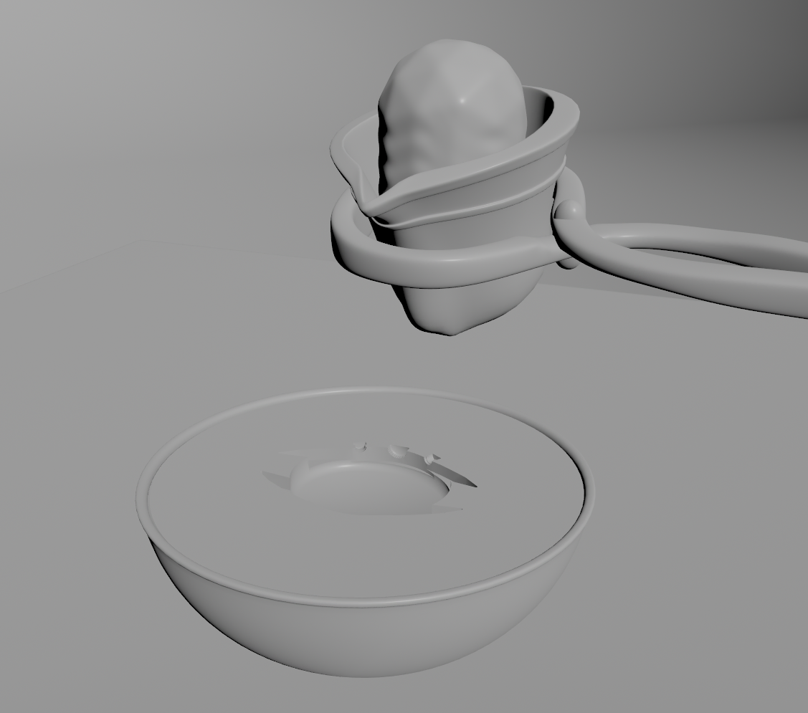
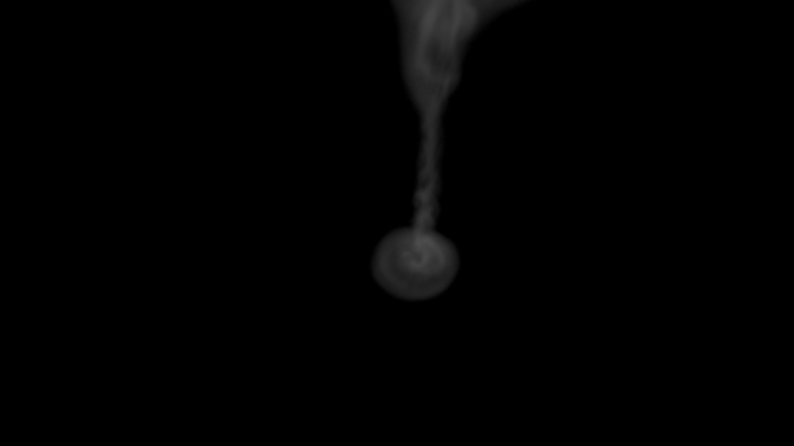

第 9 週
團隊成員
3 月 8 日
Bomin Kim（特效）
Caleb Stovall（3D／2D）
Mojie Tang（特效）
Sydney Relkin（合成）
Yiqi Zheng（特效）
SCAD × HARBOR － 第 9 週
大家好，這是我 SCAD × Harbor 部落格的第九週！
上週導師們親自來到課堂，為我們的專案提供了很多實用的建議，大家都很興奮。我也很幸運地得到 Olivia 對我作品集的回饋。此外，Billy 為我們上了非常實用又完整的燈光與算圖課。這些資訊都非常有幫助。


這週依照 Kyle 的建議，我為熔融流體加上了動態模糊。

另一件事是我們的海報，我會主要負責熔融白金的鏡頭，說明我遇到的問題與使用的解法。我會提供需要放進海報的資訊，最後由 Mojie 整合所有內容。以下是我想放進海報的內容。
問題：
由於這是用於錶帶的熔融白金模擬，要做出可控且連續的液體流動很有挑戰性。流動必須穩定但不能過量，才能呈現真實又好看的效果。
主要的困難之一是找到合適的鍋子角度與圓形發射範圍，以維持平順不間斷的液流。發射範圍太大，液體會不自然地溢出；太小，流動又會不連貫。另一個挑戰是避免液體邊緣破碎或看起來塊狀。此外，流體表現與效能之間的平衡也很重要，因為粒子數量太高會大幅拖慢模擬。



方法：
為了做出更細緻、更可控的傾倒效果，我調整了倒杯的角度，並降低 pointsfromvolume 節點中的點間距，讓粒子分佈更細。為了進一步優化流體外觀，我把 vdbsmoothsdf 節點的運算改成 Gaussian，讓液體表面更平滑。
一開始我讓球體持續發射粒子來產生液體，但鍋子傾斜時液量會過多，導致流動不自然，也大幅拖慢模擬。為了解決這點，我改成複製多個球體，每個只發射一次粒子。經過多次迭代與調整，最後做出了穩定且視覺準確、符合預期的液體效果。
這些是我這個鏡頭的不同圖層（4K）。


